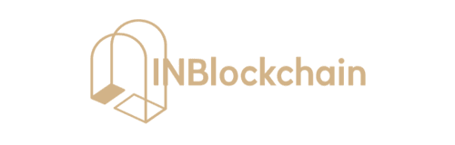

合作伙伴
Partner
Partner

Nework是基于区块链技术连接人类工作技能的激励型平台。在Nework上，人们可以作为个体商务节点之一，轻松参与到各种工作中。开放的项目还可以让围观群众参与点赞，转发贡献正能量，均可获得来自Nework奖金池的Token激励。
Nework is an incentive platform based on blockchain technology that connects human work skills. On nework, people can easily participate in all kinds of work as one of the individual business nodes. The open project also allows onlookers to participate in likes and forward to contribute the positive energy, both of which can get Token incentives from the nework bonus pool.
利用区块链底层技术，将交易信息、用户信息、合约信息、生态规则等写入区块链，用以驱动Nework生态的价值流转
It use blockchain underlying technology to drive Nework's ecosystem value flow by writing transaction information, user information, contract information, and ecological rules into the blockchain.
任何用户均可在Nework平台发布Mission Trade，在Mission Trade中，用户既可以作为发布者发布需求，也可以作为执行者认领或接受需求。
Any user can publish Mission Trade on the Nework platform. In Mission Trade, the user can either publish the requirements as a publisher or as an executor to claim or accept the demand.
以“智能大数据”为核心，建立用户的特征、项目特征数据库，当用户发布项目时，依据项目特征自动匹配出相关技术人员，同时为发布用户推荐执行用户，为执行用户推荐项目。
With "smart big data" as the core, the user's characteristics and project features database are established. When the user releases a project, the related technical person are automatically matched according to the features of the project. At the same time, It recommended executors to sponsors and projects to the executors.
用户可以在交易中心中商业交易行为Mission Trade，该行为可以邀请参与者，也可以分享。每一笔交易都会都会参与到POMt计算中，并将结果公开，透明的记录在区块链上。
the user can Trade Mission in the transaction center, which behavior can be invited to participants and can also share. Each transaction will participate in the calculation of POM, and the results will be publicly and transparently recorded in the blockchain
Nework为更加方便平台链公司的发展平台提供广告中心，支持链公司通过Token购买广告位，也支持外部公司通过现金购买广告位。广告中心结合推荐算法与DSP分发逻辑，通过API更可将广告投放到Nework以外
Nework provides an advertising hub for platform chain company growth, and the supporting chain companies buy advertising space through Token, as well as support external companies buy advertising space in cash. The ad center, combined with recommendation algorithms and DSP distribution logic, also can serve ads beyond Nework through the API.
应用中心的应用分为两部分，一部分是Nework团队自己推出的各项功能应用，一部分是由第三方开发者通过Nework开放平台开发的应用。
The application of the application center is divided into two parts, one part is the application of the features introduced by the Nework team itself, and the other is the application developed by the third party developers through the Nework open platform.
POMt是由完成Mission Trade挣得的信用凭证，是基于自学习多维度等级评分模型优化技术建立激励机制，完全依赖于用户在平台中的活跃度、交易水平和交易质量，让用户的价值得以最合理的体现。
为了有效激励Nework平台的建设者与参与者，也为了实现平台的生态增长，Nework基于Ethereum发行通行于Nework生态的NEW（Nework Coin）。用户可以使用它在平台中进行交易、打赏、投放广告等。
在Nework中，用户及链公司的Mission trust是衡量其价值与权益的唯一依据，Nework平台建立独有的 POMt算法依据用户的Mission trust值，进行分配计算，将NEW分配到用户钱包中。
POMt is the credit earned by completing Mission Trade. POMt builds an incentive mechanism based on self-learning multidimensional grading model optimization techniques, it relies entirely on user activeness, transaction levels and transaction quality in the platform so that users' values can be most appropriately reflected.
In order to effectively motivate the builders and participants of the Nework platform as well as to realize the platform's ecological growth, Nework issue NEW (Nework Coin) based on Ethereum which is univerval to Nework ecology, users can use it in the platform for trading, reward, advertising and so on.
In Nework, users and chain company's Mission trust is the unique basis to measure their value and rights, Nework platform create a exclusive POMt algorithm, establish the allocation mechanism of NEWs. The reward pool calculate and assigns NWCs to user’s wallet according to their Mission trust value.
提出建设 Nework 平台，沟通平台发展方向
开始区块链与互联网交易平台产品融合的需求调研
完成技术调研与选型，确定系统架构方案
Nework 项目正式启动，确定平台产品形态
正式启用 Nework.pro域名，Nework 官方网站上线
Nework 项目开始预售募集
完成产品方案整体设计
启动底层架构设计和开发
完成平台基础功能开发及最小系统验证，完成Web客户端开发
启动Alpha版内测，iOS，Android客户端开发
Beta版公测上线，对所有用户开放使用
Nework公链完成开发，进行测试
迁移至Nework公链
API平台及广告系统上线
Proposal for Nework platform construction and development
Start requirement research on product integration of blockchain and internet trading platform
Complete technical research and selection, determine the system
Nework project officially started and the platform product form determined
Officially enabled Nework.pro domain name, Nework official website come online
Nework project start pre-sale and fund raise
Complete the entire design of product
Start the underlying architecture design and development
Complete the development of basic function and the verification of MVP, complete the development of web client
Launch Alpha beta, complete the development of iOS and Android client
Beta beta come online, open to all users
Complete the development of Nework public chain to test
migrate to Nework public chain
API platform and advertising system come online
提出建设 Nework 平台，沟通平台发展方向
开始区块链与互联网交易平台产品融合的需求调研
完成技术调研与选型，确定系统架构方案
Nework 项目正式启动，确定平台产品形态
正式启用 Nework.pro域名，Nework 官方网站上线
Nework 项目开始预售募集
完成产品方案整体设计
启动底层架构设计和开发
完成平台基础功能开发及最小系统验证，完成Web客户端开发
启动Alpha版内测，iOS，Android客户端开发
Beta版公测上线，对所有用户开放使用
Nework公链完成开发，进行测试
迁移至Nework公链
API平台及广告系统上线
Proposal for Nework platform construction and development
Start requirement research on product integration of blockchain and internet trading platform
Complete technical research and selection, determine the system
Nework project officially started and the platform product form determined
Officially enabled Nework.pro domain name, Nework official website come online
Nework project start pre-sale and fund raise
Complete the entire design of product
Start the underlying architecture design and development
Complete the development of basic function and the verification of MVP, complete the development of web client
Launch Alpha beta, complete the development of iOS and Android client
Beta beta come online, open to all users
Complete the development of Nework public chain to test
migrate to Nework public chain
API platform and advertising system come online
全球最大的产品经理社区PMCAFF的发起人及CEO，互联网创新服务众包平台-外包大师CEO。拥有超过10年以上产品经理经验，期间担任多家大型互联网重要产品线的负责人，曾任去哪儿国际酒店总负责人，360高级产品经理，参与360众多知名项目，新浪微博用户激励产品Leader。
The founder and CEO of PMCAFF, the world's largest product manager community and the CEO of waibaodashi, a crowdsourcing platform for Internet innovation services. With more than 10 years of experience as a product manager, he has served as the head of several major internet product lines, once served as the general head of international hotels in Qunaer, senior PM in 360 participated in many well known project, and the leader of user incentive product in Weibo .
擅长分布式高迸发系统架构，原青云QingCloud容器平台负责人，超过一年 区块链技术实践经验，曾任新浪微博架构师、微米技术总监、Grouk技术负责 人，他是云与容器的深度实践者，重度工具控，中国Kubernetes的布道者。
Specializing in distributed high-concurrency system architecture, former QingCloud Container Platform Leader, once served as architect in Weibo, Micron Technology Director and technological leader of Grouk, he is a deep practitioner of Cloud and Container, heavily addicted in tools, the evangelist of Kubernetes.
资深千万级交易系统架构师，具备超过一年区块链技术开发经验。前美团机票 技术专家，交易平台和架构负责人，新浪微博激励增值技术负责人。多年高并 发架构设计经验，擅长交易平台，社交平台等。
Once responsible for several high concurrency transaction projects, senior architect of trading system with tens of millions concurrency, former technological head of ticket in Meituan and incentive growth in Weibo. Years of architecture design experience in high concurrency , good at trading platform and social platform.
PMCAFF核心成员，前新浪微博客户端产品经理，有丰富的产品经验。多次 参与主导创业项目，为近百家企业提供互联网转型及产品、营销咨询服务。
PMCAFF core members, former Weibo client product manager, has a wealth of product experience. He has been leading involved in venture projects for many times and has provided internet transformation and product and marketing consulting services to nearly 100 enterprises.
PMCAFF核心成员，原新浪微博品牌主要负责人，产品市场总监，经历新浪 微博从起步到上市全过程，主导新浪微博品牌从0到100，负责多项大型品牌 活动及产品市场工作。
PMCAFF core members, Sina Weibo chief brand officer, product marketing director, he attend in the entire process of Weibo from the start to be listed, leading Sina Weibo brand from 0 to 100, responsible for a number of major brand activities and product market work.
PMCAFF高级工程师，曾任19e平台架构师，10年以上软件行业从业经验,4 年互联网金融行业从业经验,两年区块链行业从业经验。具有丰富分布式、 多 线程及高性能的架构设计经验，对区块链底层逻辑有一定的了解,具备丰富的 开发上层产品的经验，并为多个区块链项目贡献过代码。
PMCAFF senior engineer, former 19e platform architect with more than 10 years of experience in the software industry, 4 years experience in the Internet finance industry and two years in the block chain. He has rich experience in distributed, multi-threaded and high-performance architecture design, he has some knowledge of the underlying logic in blockchain, has extensive experience in developing top-level products and contributed code to multiple blockchain projects.
PMCAFF高级产品经理，六年互联网行业工作经验。原360安全卫士产品经 理，主导360安全卫士11.0版本的产品迭代工作，独自进行360文档卫士的 从0-1的产品设计以及国际化相关工作。原猎豹清理大师核心产品团队成员。
PMCAFF senior product manager, six years of Internet industry work experience. The former product manager of 360 security guards, leading the iterative work of 360 security guards 11.0 version, responsible for the 0-1 product design and international related work of 360 file guards. The former Clear Master core product team members in Liebao.
PMCAFF HRD，20年人力资源管理从业经验，曾先后服务于金山软件、亚 商在线、中关村科技、奇虎360等公司。擅长员工招聘管理、培训发展及员工 职业规划等领域。2015年之后专注于互联网创新型企业的架构咨询、高端人 才引入、培训开发计划，助力企业人才战略规划实施。
PMCAFF HRD, 20 years experience in human resources management, has served in Kingsoft, Asia Online, ZOL, 360 and other companies. Be skilled in recruitment management, training, career planning and other fields. After 2015, he focus on the structural consulting of innovative internet enterprises, the introduction of senior talents and the training development plan, which contributes to the implement of enterprise talents strategic planning.
INB硬币资本创始人。
Founder of INBlockchain.
节点资本是一家专注于区块链行业的风险投资公司，是全球最早布局区块链产业生态的专业投资机构之一。节点资本投资项目包括火币、库神钱包、博晨技 术、蜂窝矿机、金色财经、链上科技、域链、 区块雷达等50+企业。
NodeCapital is a venture capital firm focused on the blockchain industry and one of the earliest professional investment institutions blockchain industry ecology in the world.NodeCapital invested more than 50 projects include Huobi, KuShen Wallet, BoChen Technology, Fengwo , Golden Finance, Chain Technology, Dochain and Block Radar.
今日头条天使投资人，曾任职于360，新浪等公司，投资过今日头条，腾讯音乐娱乐集团等知名项目。
Angel investors of TouTiao, once worked for 360, Sina and other companies, invest in TouTiao, Tencent Music Entertainment Group and other famous projects.
CSDN（全球最大技术社区）创始人，AI100创始人，极客帮创投创始合伙人。 超过24年软件和互联网工作经历，历任巨人集团开发部经理，金山软件副总经理，领导开发了金山词霸和超级解霸。
Founder of CSDN(the world's largest technical community), founder of AI100, founding Partner of Geek. More than 24 years of software and Internet work experience, once served as the development manager in Giant Group, the deputy General Manager in Jinshan Software, and led the development of Kingsoft Power and Super Power.
沸点资本管理合伙人，互联网行业公司管理、产品运营和市场营销专家。参与360早期创业，曾任360高级副总裁及产品负责人，并成为360终身荣誉顾问，投资项目包括好贷网、MediaV、悦跑圈、黄太吉等。
Partner of Boiling Point Capital Management, Specialist in management of Internet company, product operations and marketing. Engaged in 360 early start-up, served as 360 senior vice president and product manager and 360 lifetime honorary consultant, once invested in projects like HaoDai network, MediaV, Yue Runquan, Huang Taiji and so on.
执一资本创始合伙人 ，前鼎晖创投合伙人。李牧晴先生曾主导并参与投资了奇虎360、链家、我爱我家、加油宝、美利金融、闪送、闻泰、赛维LDK、康辉、协鑫、九阳等企业。李牧晴先生拥有清华大学经济学硕士学位和南开大学国际经济学学士学位。
Founding partner of Zhiyi capital, the former CDH Ventures partner. Mr. Li Muqing led and participated in the investment on 360, Lianjia, woaiwojia, jiayoubao, Meili Finance, ShanSong, Wen Tai, SaiWei LDK, KangHui, XieXin, JiuYang and other enterprises. He holds a master's degree in economics from Tsinghua University and a bachelor's degree in international economics from Nankai University.
JOne Capital 是全球区块链第一投行。JOne专注于区块链领域的私募顾问，全球交易所挂牌的投行业务，为区块链创业企业提供一站式资本市场服务。主要成员来自于原九鼎投资投行部门精英。
JOne Capital is the No.1 investment bank of blockchain in the world. JOne focuses on private placement advisory on blockchain and has global exchange-listed investment banking businesses,providing one-stop capital markets services to blockchain startups.Its main members are all elites from the Jiuding investment departments.
毕业于南开大学，7年管理咨询经验，曾任和君咨询业务合伙人、北京惠远咨询创始合伙人。为多家A股上市公司提供战略规划及商业模式设计、组织变革与升级、人才培养等服务
Graduated from Nankai University with 7 years of experience in management consulting. Former business partner of Hejun Consulting and founding partner of Huiyuan Consulting. He provided strategic planning, business model design and talent training for several A shares listed companies.
ProChain 联合创始人，Sigma Technology 阿拉伯新闻头条创始人，百度阿拉伯搜索引擎核心成员，中国科大计算机本科，清华计算机硕士。
Blockchain architect and co-founder of Prochain, has a Master degree in Computer Science from Tsinghua University , was a member of Baidu(arabic) search engine core team, founded Sigma Technology and ABD entertainment.